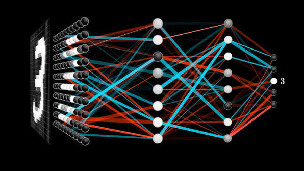

Pre-experience master’s · UK and Europe
Which computing master’s?
Twenty-two programmes across the UK, Switzerland, the Netherlands, Germany and Sweden, scored against the entry rules each one publishes.
Choose a track
Computer Science
MSc Computer Science, Advanced Computing, Informatics. The most prerequisite-driven track — most of these audit your transcript for named modules before anyone reads the rest of the file.
Begin →
Data Science & AI
MSc Data Science, Artificial Intelligence, Machine Learning. Selects on mathematics far more than the CS track does — linear algebra and probability get checked by name.
Begin →Conversion MSc
Computing master’s built for graduates of other subjects — and at several of them, already holding a computing degree is what disqualifies you. A category that barely exists outside the UK.
Begin →